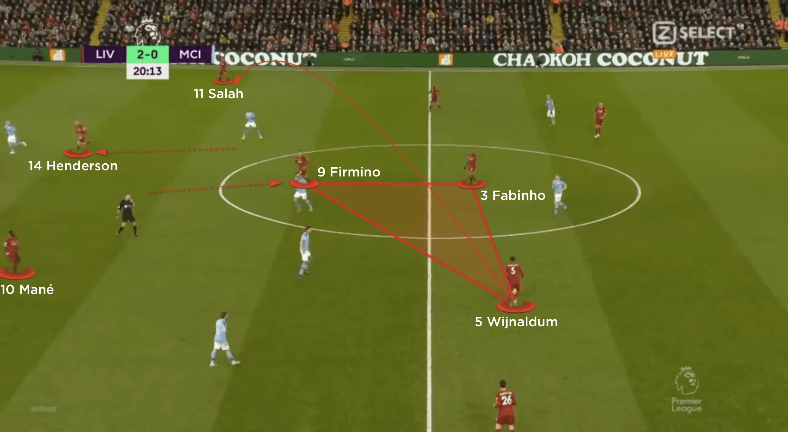

Liverpool
Historia del liverpool
El Liverpool F. C. fue fundado a raíz de una disputa entre la junta directiva del Everton y John Houlding, dueño del estadio Anfield. Tras usar el recinto por ocho años, el Everton se trasladó a Goodison Park en 1892 y Houlding fundó al Liverpool Football Club para que jugara sus partidos en Anfield.12 Originalmente formado con el nombre de «Everton F.C. and Athletic Grounds Ltd» —conocido también en forma más corta como Everton Athletic—, el club adoptó su actual nombre en marzo de 1892 y fue reconocido oficialmente por La Asociación del Fútbol tres meses después, después de que ésta se negara a reconocerlo como «Everton».13 En su primera temporada, el equipo ganó la Lancashire League, una liga regional para los equipos ubicados en el Condado de ese nombre. Posteriormente, se unió a la Football League Second Division al iniciar la temporada 1893-94. Después de finalizar en el primer lugar el club ascendió a la First Division, que ganó en 1901 y 1906.14 Liverpool alcanzó su primera final de FA Cup en 1914, perdiendo 1-0 ante el Burnley. Logró ganar dos campeonatos de liga consecutivos en 1922 y 1923, pero no ganó ningún otro trofeo hasta la temporada 1946-47, donde obtuvo su quinta liga con George Kay como entrenador.15 El equipo sufrió su segunda derrota en una final de FA Cup en 1950, en esta ocasión, ante el Arsenal,16 y descendió a la Second Division en la temporada 1953-54.17 Poco después de perder 2-1 ante el Worcester City —club que ni siquiera integraba la Football League— en la FA Cup 1958-59, Bill Shankly fue nombrado entrenador. Tras su llegada liberó a 24 jugadores del plantel y convirtió a una antigua sala de almacenamiento en Anfield en una habitación donde los entrenadores podrían discutir la estrategia, que recibió el nombre de «The Boot Room». En este salón, Shankly y otros miembros del cuerpo técnico como Joe Fagan, Reuben Bennett Bob Paisley comenzaron a planificar la remodelación del equipo
Estilo de juego
Planteamientos más habituales incluyen concentrarse en intercepciones y generar situaciones para forzar el error del rival o presionar con agresividad y un deseo de encarar duelos directos con jugadores. A todo esto, el Liverpool ha introducido un elemento adicional ofensivo alrededor de esa presión tras perdida.